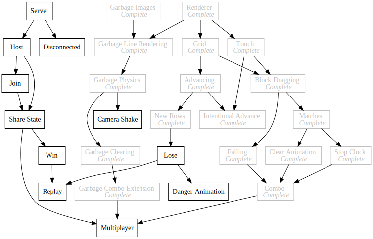

Tetris Attack Remake
A browser remake of Nintendo's Tetris Attack
2019-03-10
https://github.com/Kethku/TetrisAttackClone

What
I am making a remake of Tetris Attack for the Super Nintendo.
Why
I broadly concider Tetris Attack to be my favorite game of all time, and I have wished there was a good mobile compatible version of it which could take advantage of more intuitive controls. This is my attempt at such a remake.
How
The current version of the game can be found here. Eventually this site should support playing the original game in an endless mode, as well as verses another human, but it will probably be a while.
Dev Log
This Tetris Attack Remake is a part of my push to make tangible and documented progress on a project every day.